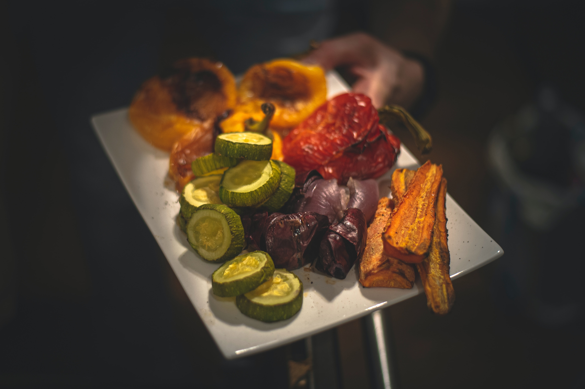

VitaNutri
Recetas Paleo
Ensalada Paleo

Ingredientes:
- Espinacas frescas
- Pollo a la parrilla
- Palta
- Tomates cherry
- Almendras
- Aderezo de aceite de oliva y limón
- Sal y pimienta al gusto
Pasos de preparación:
- Lava y corta las espinacas.
- Agrega pollo a la parrilla desmenuzado.
- Incorpora palta, tomates cherry y almendras.
- Aliña con aceite de oliva y limón.
- Sazona con sal y pimienta al gusto.
Filete de Salmón con Costra de Nueces

Ingredientes:
- Filetes de salmón
- Nueces trituradas
- Aceite de coco
- Tomillo fresco
- Jugo de limón
- Sal y pimienta al gusto
Pasos de preparación:
- Mezcla nueces trituradas con aceite de coco y tomillo.
- Coloca la mezcla sobre los filetes de salmón.
- Rocía con jugo de limón, sal y pimienta al gusto.
- Asa al horno hasta que esté dorado y el salmón esté cocido.
Pollo a la Barbacoa con Salsa de Aguacate

Ingredientes:
- Pechugas de pollo
- Salsa de barbacoa sin azúcar
- Aguacates maduros
- Ajo picado
- Aceite de oliva virgen extra
- Sal y pimienta al gusto
Pasos de preparación:
- Asa las pechugas de pollo con salsa de barbacoa.
- Prepara una salsa de aguacate con aguacates maduros, ajo y aceite de oliva.
- Sirve las pechugas con la salsa de aguacate por encima.
Vegetales al Horno con Hierbas

Ingredientes:
- Calabacines
- Zanahorias
- Champiñones
- Aceite de oliva
- Tomillo y romero frescos
- Sal y pimienta al gusto
Pasos de preparación:
- Corta los vegetales en trozos.
- Mezcla con aceite de oliva, tomillo y romero.
- Asa en el horno hasta que estén tiernos y dorados.
Albóndigas de Pavo con Salsa de Tomate

Ingredientes:
- Carne molida de pavo
- Cebolla picada
- Ajo picado
- Salsa de tomate casera
- Huevos
- Orégano y albahaca frescos
- Sal y pimienta al gusto
Pasos de preparación:
- Mecha la carne de pavo con cebolla, ajo, huevos y hierbas.
- Forma albóndigas y cocina en salsa de tomate casera.
- Condimenta con sal y pimienta al gusto.